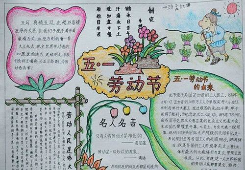
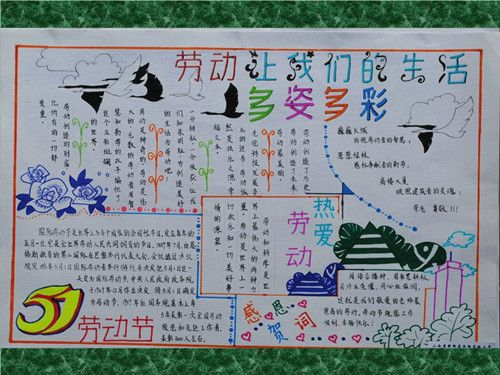

2019-04-28
在过两天就是五一劳动节了，五一国际劳动节源于美国芝加哥城的工人大罢工，是世界上80多个国家的全国性节日。定在每年的五月一日。它是全世界劳动人民共同拥有的节日。今天我们就为大家整理了关于五一劳动节的手抄报及素材，供同学们参考。


劳动节简介：
亦称"五一节",定在每年的五月一日。它是全世界无产队级、劳动人民的共同拥有的节日。五一国际劳动节源于美国芝加哥城的工人大罢工。1886年5月1日，芝加哥的二十一万六千余名工人为争取实行八小时工作制而举行大罢工，经过艰苦的流血斗争，终于获得了胜利。为纪念这次伟大的工人运动，1889年7月第二国际宣布将每年的五月一日定为国际劳动节。这一决定立即得到世界各国工人的积极响应。1890年5月1日，欧美各国的工人阶级率先走向街头，举行盛大的示威游行与集会，争取合法权益。从此，每逢这一天世界各国的劳动人民都要集会、游行，以示庆祝。
五一国际劳动节的由来与来历：
19世纪80年代，随着资本主义进入垄断阶段，美国无产阶级的队伍迅速壮大，出现了波澜壮阔的工人运动。当时美国资产阶级为了进行资本积累，对工人阶级进行残酷的剥削压榨，他们用各种手段迫使工人每天从事长达12-16小时的劳动。美国广大工人逐渐认识到，为了保障自己的权利，必须起来进行斗争。
从1884年开始，美国先进的工人组织通过决议，要为实现“每天工作八小时”而战斗，并且决定展开广泛的斗争，争取在1886年5月1日实行八小时工作制。八小时工作制的口号提出后，立即得到美国全国工人阶级的热烈支持和响应，许多城市数以千计的工人投入了这场斗争。罢工工人遭到美国当局的血腥镇压，很多工人被杀害和逮捕。
1886年5月1日，美国芝加哥等城市的35万工人举行大罢工和游行示威，要求实行8小时工作制、改善劳动条件。这场斗争震撼了整个美国。工人阶级团结战斗的强大力量，迫使资本家接受了工人的要求。美国工人的这次大罢工取得了胜利。
1889年7月，由恩格斯领导的第二国际在巴黎举行代表大会。为了纪念美国工人的这次“五一”大罢工，显示“全世界无产者，联合起来!”的伟大力量，推进各国工人争取八小时工作制的斗争，会议通过决议，规定1890年5月1日国际劳动者举行游行，并决定把5月1日这一天定为国际劳动节。从此，每逢这一天世界各国的劳动人民都要集会、游行，以示庆祝。
中华人民共和国成立后，劳动人民登上了历史舞台，劳动者成为了国家的主人。中央人民政府于1949年12月作出决定，将5月1日确定为劳动节，全国放假一天。2008年，五一劳动节的假期调整为三天。
劳动节意义：
国际劳动节的意义在于劳动者通过斗争，用顽强、英勇不屈的奋斗精神，争取到了自己的合法权益，是人类文明民主的历史性进步，这才是五一劳动节的精髓所在。所以，人们才这么注重劳动节。
劳动不仅有关人的健康和智慧，也有关人的快乐和美好。劳动使我们生活丰富多彩，劳动锻炼和造就了我们人类。人的伟大其实就在于会劳动、能劳动和爱劳动。没有劳动的人生是毫无意义的，能体现劳动的生活是充满幸福的。
关于劳动节的名言：
1、我这一生基本上只是辛苦工作，我可以说，我活了七十五岁，没有那一个月过的是舒服生活，就好象推一块石头上山，石头不停地滚下来又推上去。——歌德
2、要工作，要勤劳：劳作是最可靠的财富。——拉·封丹
3、热爱劳动吧。没有一种力量能象劳动，既集体、友爱、自由的劳动的力量那样使人成为伟大和聪明的人。——高尔基
4、有总是从无开始的;是靠两只手和一个聪明的脑袋变出来的。——松苏内吉
5、在人的生活中最主要的是劳动训练。没有劳动就不可能有正常的人的生活。——卢梭
6、只有人的劳动才是神圣的。——高尔基
7、做事，不止是人家要我做才做，而是人家没要我做也争着去做。这样，才做得有趣味，也就会有收获。——谢觉哉
8、锄禾日当午，汗滴禾下土。谁知盘中餐，粒粒皆辛苦！——李绅
9、社会主义制度的建立给我们开辟了一条到达理想境界的道路，而理想境界的实现还要靠我们的辛勤劳动。——毛泽东
10、科学是到处为家的，——不过只是任何不播种的地方，它是不会使其丰收的。——赫尔岑
11、正如树枝和树干连接在一起那样，脱离树干的树枝很快就会枯死。——奥涅格
12、有总是从无开始的；是靠两只手和一个聪明的脑袋变出来的。——松苏内吉
13、世间没有一种具有真正价值的东西，可以不经过艰苦辛勤劳动而能够得到的。——爱迪生
14、“一劳永逸”的话，有是有的，而“一劳永逸”的事却极少……——鲁迅
15、任何一种不为集体利益打算的行为，都是自杀的行为，它对社会有害。——马卡连柯
五一劳动节的古诗：
1、《悯农》
唐·李绅
锄禾日当午，汗滴禾下土。
谁知盘中餐，粒粒皆辛苦。
2、《观刈麦》
唐·白居易
田家少闲月，五月人倍忙。
夜来南风起，小麦覆陇黄。
妇姑荷簟食，童稚携壶浆。
相随饷田去，丁壮在南冈。
足蒸暑土气，背灼炎天光。
力尽不知热，但惜夏日长。
复有贫妇人，抱子在其傍。
右手秉遗穗，左臂悬敝筐。
听其相顾言，闻者为悲伤。
家田输税尽，拾此充饥肠。
今我何功德，曾不事农桑。
吏禄三百石，岁晏有馀粮。
念此私自愧，尽日不能忘。
3、《归园田居》
东晋·陶渊明
种豆南山下，草盛豆苗稀。
晨兴理荒秽，带月荷锄归。
道狭草木长，夕露沾我衣。
衣沾不足惜，但使愿无违。
4、《四时田园杂兴》
宋·范成大
昼出耘田夜绩麻，村庄儿女各当家。
童孙未解供耕织，也傍桑阴学种瓜。
5、《乡村四月》
宋·翁卷
绿遍山原白满川，子规声里雨如烟。
乡村四月闲人少，才了蚕桑又插田。
6、《畲田调二首》
宋·王禹偁
之一
大家齐力斸孱颜，耳听田歌手莫闲。
各愿种成千百索，豆萁禾穗满青山。
之二
北山种了种南山，相助力耕岂有偏?
愿得人间皆似我，也应四海少荒田。
精品学习网(5iedu.com.cn)在建设过程中引用了互联网上的一些信息资源并对有明确来源的信息注明了出处，版权归原作者及原网站所有，如果您对本站信息资源版权的归属问题存有异议，请您致信qinquan#5iedu.com.cn(将#换成@)，我们会立即做出答复并及时解决。如果您认为本站有侵犯您权益的行为，请通知我们，我们一定根据实际情况及时处理。